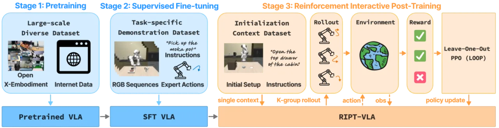
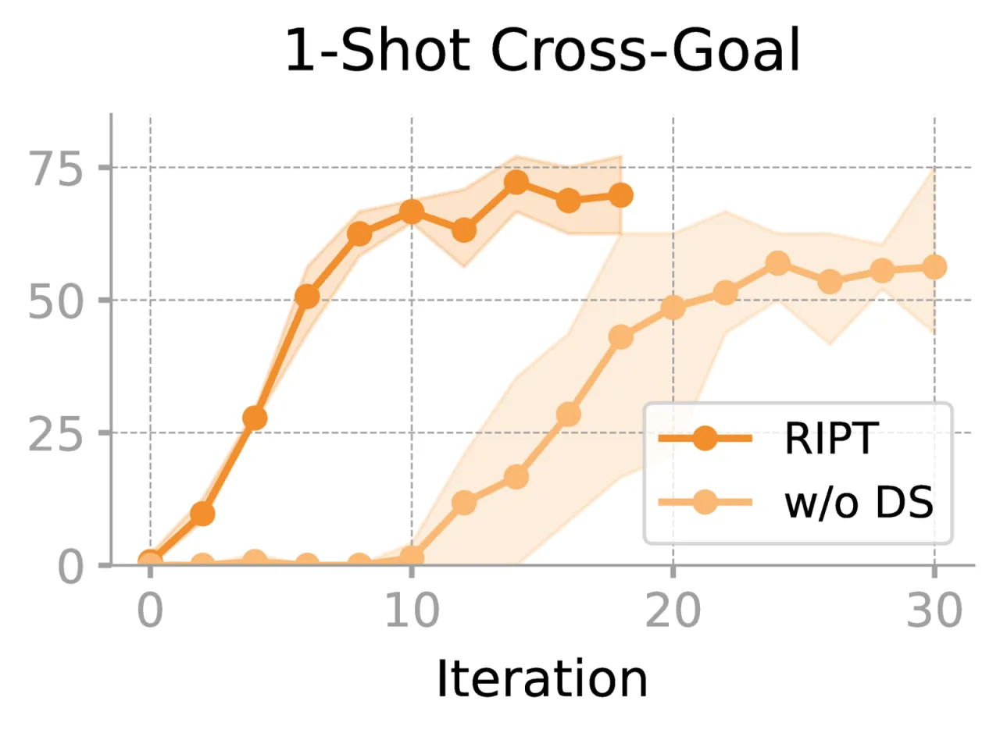
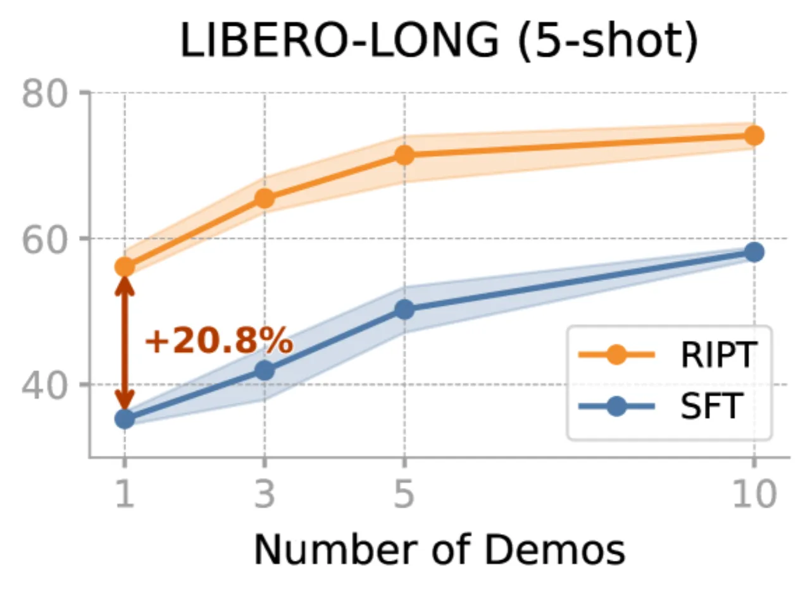
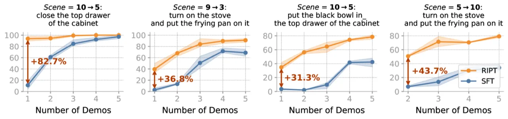
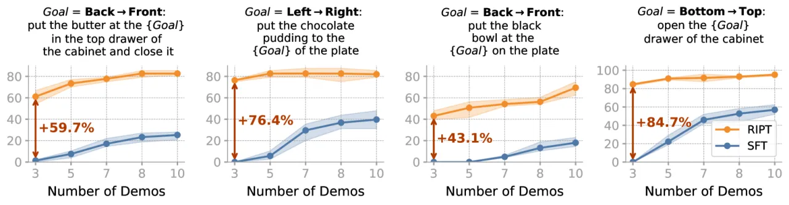

现有 VLA 模型依赖大量离线专家演示进行监督微调，模型在训练中从不感知自身行动的后果。RIPT-VLA 引入第三个训练阶段——在真实或仿真环境中与场景交互，只需稀疏的二元成功/失败信号，即可将模型性能大幅提升，甚至在仅有 1 条演示的情况下，将成功率从 4% 提升至 97%。
大型预训练 VLA 模型（如 OpenVLA、QueST）在离线监督微调（SFT）之后仍存在两大根本缺陷：模型从未体验过自身决策的环境反馈；任务特化微调又需要昂贵的大量专家演示。强化学习理论上可以弥补这两点，但将 RL 扩展到大规模多任务 VLA 时，面临奖励稀疏、信用分配模糊、多任务难度不均衡等挑战。
"Current VLA training paradigms operate on static offline datasets...models never experience the consequences of their own actions during training, and task-specific fine-tuning requires large quantities of expensive human demonstrations."

RIPT-VLA 在标准预训练和 SFT 之后，引入基于环境交互的强化学习后训练阶段。其核心是将 Leave-One-Out 优势估计（RLOO）与 PPO 优化相结合，并通过 dynamic sampling 机制过滤零优势样本组，从而在多任务不均衡场景下稳定策略梯度更新。整个框架仅需稀疏的二元成功/失败奖励，无需稠密奖励设计或额外的 critic 模型。
对每个上下文 c，模型在相同上下文下采样 K 条轨迹。第 k 条轨迹的 baseline 为其他 K−1 条轨迹奖励的均值：
bk = 1/(K−1) · ∑j≠k Rj ， Ak = Rk − bk
这提供了"group-normalized advantage"，无需训练与 VLA 等规模的 value function，大幅降低显存开销。PPO 目标使用标准 clipped 策略比率（ε=0.2）。
多任务场景中，部分任务已被 SFT 解决（全部成功），另一些任务则始终失败——两者都产生全零优势，对梯度更新毫无贡献。RIPT-VLA 的核心创新之一是：
"We discard any sampled context for which all K rollouts receive the same reward and resample."
这使得每个训练 batch 都由有效的非零优势样本构成，保持梯度信号的稳定性。
对于使用回归头（而非 token 分类）的模型，log-probability 无法直接获取。RIPT-VLA 为其增加一个轻量 scale prediction head 来估计 σθ，将连续动作输出建模为因子化高斯分布，从而对接 PPO 目标。

实验在 LIBERO（Goal / Spatial / Object / Long / 90）和 MetaWorld-45（ML45）仿真环境中展开，覆盖标准多任务、few-shot 泛化、跨场景/跨目标泛化四类设置。基线模型包括 QueST（离散 token 动作）和 OpenVLA-OFT（连续回归动作）。奖励信号仅为任务结束时的二元成功信号。
| 方法 | Goal | Spatial | Object | Long | 平均 |
|---|---|---|---|---|---|
| QueST | 80.8 | 87.4 | 93.6 | 68.8 | 82.7 |
| QueST + RIPT-VLA | 92.7 | 95.6 | 98.4 | 87.5 | 93.6 |
| OpenVLA-OFT | 97.9 | 97.6 | 98.4 | 92.9 | 96.7 |
| OpenVLA-OFT + RIPT-VLA | 99.0 | 98.6 | 98.6 | 93.8 | 97.5 |
| 方法 | LIBERO-90 | ML45 | LONG (5-shot) | ML45 (5-shot) |
|---|---|---|---|---|
| QueST | 88.6 | 91.0 | 50.2 | 63.6 |
| QueST + RIPT-VLA | 94.3 | 92.2 | 71.4 | 76.0 |
| 提升幅度 | +5.7 | +1.2 | +21.2 | +12.4 |



Table 3 展示 dynamic sampling 的贡献：QueST SFT 基线为 85.0%，去掉 dynamic sampling 的 RIPT-VLA 达到 90.2%（+5.2），完整 RIPT-VLA 达到 93.5%（+8.5）。Dynamic sampling 在 QueST SFT 基础上带来额外 +3.3 个百分点的提升，作者指出这"significantly boosts performance across all task categories"。
RIPT-VLA 需要在训练期间执行 rollout 并获取环境反馈。对于无法重置或成本极高的真实环境，这一需求会带来显著的部署障碍。作者仅在仿真 benchmark（LIBERO、MetaWorld）上验证，未报告真实机器人实验。
Figure 7 显示，当初始状态标准差超过自然方差的 2× 时，性能开始下降。这意味着 RIPT-VLA 学到的策略对物体初始摆放位置的扰动容忍度有限，在高随机性真实场景中鲁棒性存疑。
Figure 6 表明，context 数据集规模影响 RIPT-VLA 的泛化性能。当可用 context（演示）数量极少时，策略的泛化能力受限。
对于 OpenVLA-OFT 等使用连续回归头的模型，RIPT-VLA 需训练一个额外的轻量 scale prediction head 来估计高斯分布的方差，增加了架构改动成本；该 head 的质量对策略优化也有潜在影响。
作者在讨论中指出，未来应"combine RIPT-VLA with reasoning and planning in VLA models to enable more sophisticated and generalizable behaviors"，暗示当前方法在长时程复杂推理任务上仍有提升空间。